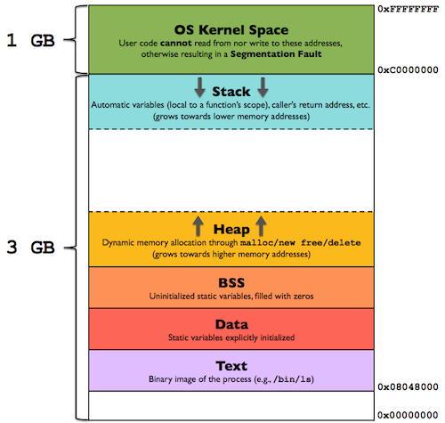
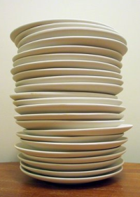
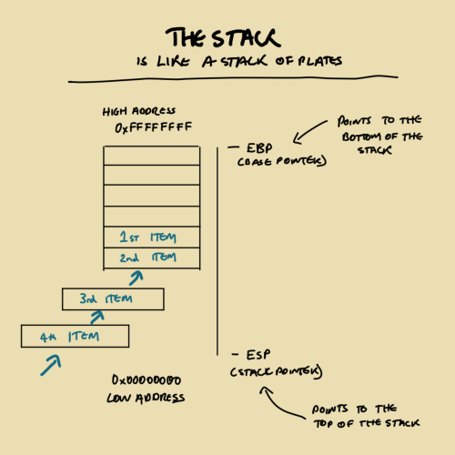
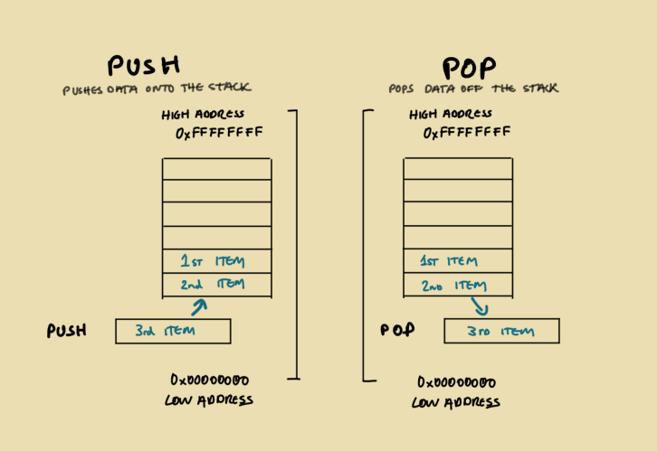
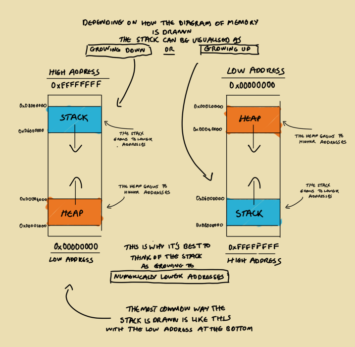
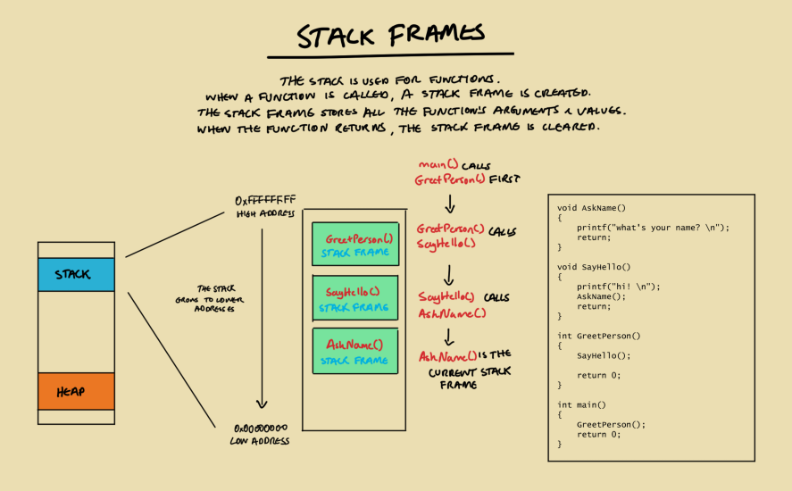
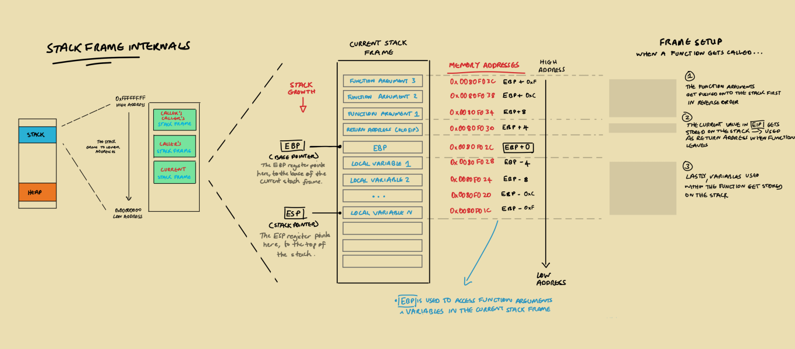
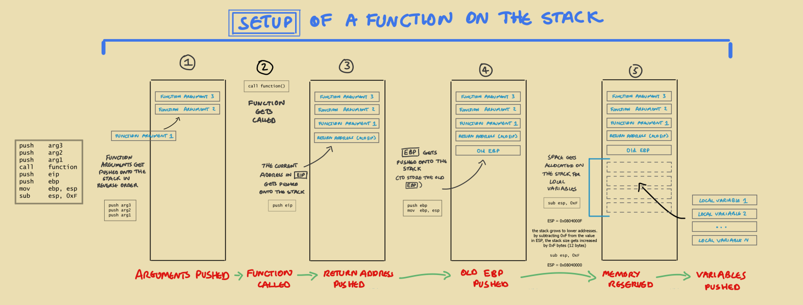
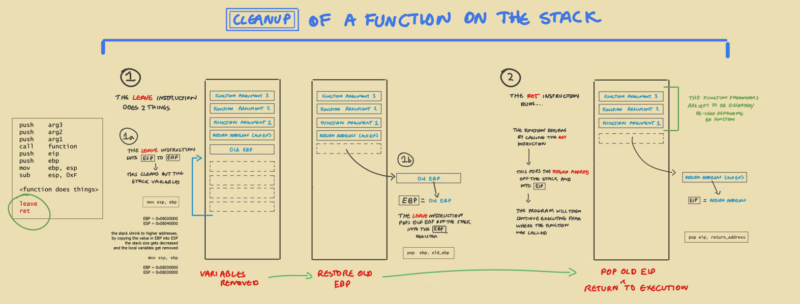

# x86 Memory Layout
Memory stores you program's instructions and data.
Here's what the memory layout looks like for an x86 process.
b
## The Heap
The heap is an area of dynamic memory that stores temporary values.
The heap grows to numerically higher memory addresses.
## The Stack
The stack is used for functions - it holds function parameters and local variables.
The stack is a
FIFO structure -
First In Last Out.
This means that the first item you put on the stack will be last item you get back out.
You can think of the stack as a stack of plates:
• the first plate you put on the stack is the last one you'll get out
The
ESP register points to the top of the stack.
The
EBP register points to the bottom of the stack.
The
PUSH instruction pushes data onto the stack.
The
POP instruction pops data off the stack.
The stack starts at a high address and grows to numerically lower addresses.
Depending on the diagram, the stack will either grow upwards or downwards. This is why it's best to think of the stack as growing to numerically lower addresses.
The reason the stack starts at a high address is historical.
Early computers divided memory into 2 parts: the heap and the stack.
It was not known how big both the heap and the stack were going to be when the program was running, so the heap and the stack were placed at opposite ends of memory and grew towards to the middle. The stack, just by chance, was placed at the high address.
### Stack Frames
The stack is used for functions.
When a function is called, a stack frame is created.
The stack frame stores all of the function's arguments and temporary variables.
When the function returns, the stack frame is cleared.
Functions can call other functions.
If this happens, another stack frame gets created on top of the existing stack frame.
### Internals of a Stack Frame
When a function is called:
1. The function's arguments are pushed onto the stack
2. The address in EIP at the time of the function being called gets pushed onto the stack
◇ This value is used as the
return address ◇ When the function leaves, the CPU will jump to this return address so that it can continue executing code from where the function was called
3. The EBP gets pushed onto the stack
4. The function's local variables are pushed onto the stack
EBP points to the base of the current stack frame.
It gets used to access the function arguments and local variables within the current stack frame.
◇
EBP - N will grab local variables, because they're stored at lower addresses
◇
EBP + N will grab function arguments, which are stored at high memory addresses because they're pushed first onto the stack
### Lifecycle of a Function on the Stack
Functions will prepare the stack frame, and clean it up afterwards.
Setup:1. First, the function's arguments are pushed onto the stuck
◇ They are done so in reverse order
◇
push arg3 push arg2 push arg12. The function gets called
◇
call <function>3. The value in EIP gets pushed onto the stack as the
return address ◇ This value gets used as the address to return to after the function has returned
◇ It points back to where to the original function was called, so that the program can continue executing
4. The value in EBP - the old EBP - gets pushed onto the stack
◇ This is so that we can return to the previous stack frame once this function has returned
5. Space for the function's local variables gets allocated by subtracting N no. of variables from ESP
◇ The stack grows to lower addresses
◇ By subtracting
0xF from ESP, the stack size gets increased by
0xF byes (12 bytes)
The function runs.
Cleanup:7.
leave - The leave instruction does 2 things:
◇ Sets
ESP to
EBP - this decreases the size of the stack and removes the local variables
◇ Pops the old
EBP stored on the stack into
EBP - now the old stack frame has been restored.
8.
ret - The
ret instruction causes the function to exit
◇ The
return address stored on the stack is popped into EIP, and the program continues execution from where the function was called
